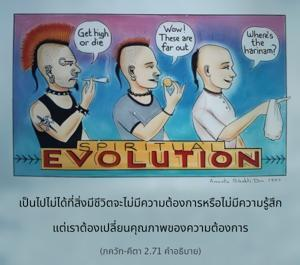

บุคคลผู้สลัดความต้องการทั้งหมดในการสนองประสาทสัมผัส มีชีวิตอยู่โดยปราศจากความต้องการ สลัดความรู้สึกว่าเป็นเจ้าของ ปราศจากอหังการ จะเป็นผู้เดียวเท่านั้นที่สามารถได้รับความสงบอย่างแท้จริง

ไม่มีความต้องการ หมายความว่าไม่ต้องการสิ่งใดเพื่อสนองประสาทสัมผัส อีกนัยหนึ่งการมีกฺฤษฺณจิตสำนึกก็คือการที่ไม่มีความต้องการ การเข้าใจสถานภาพอันแท้จริงของเราว่าเป็นผู้รับใช้นิรันดรขององค์กฺฤษฺณโดยไม่อ้างอย่างผิดๆ ว่าร่างกายวัตถุนี้เป็นตนเอง และไม่อ้างอย่างผิดๆว่าตนเป็นเจ้าของสิ่งหนึ่งสิ่งใดในโลก นี่คือระดับสมบูรณ์ของกฺฤษฺณจิตสำนึก ผู้ที่สถิตในระดับอันสมบูรณ์นี้ทราบว่าองค์กฺฤษฺณทรงเป็นเจ้าของทุกสิ่งทุกอย่าง ดังนั้น ทุกสิ่งทุกอย่างจึงต้องนำมาใช้เพื่อให้องค์กฺฤษฺณทรงพอพระทัย อรฺชุน ไม่ต้องการต่อสู้เช่นนี้เป็นการกระทำเพื่อสนองประสาทสัมผัสของตนเอง แต่เมื่อมีกฺฤษฺณจิตสำนึกอย่างสมบูรณ์ อรฺชุน จะต่อสู้เพราะองค์กฺฤษฺณทรงปรารถนาให้สู้ เพื่อสนองความต้องการของตนเอง อรฺชุน ไม่ต้องการสู้ แต่เพื่อองค์กฺฤษฺณ อรฺชุน องค์เดียวกันนี้จะต่อสู้อย่างสุดความสามารถ การไม่มีความต้องการที่แท้จริง คือการต้องการเพียงให้องค์กฺฤษฺณทรงพึงพอพระทัย ไม่ใช่พยายามละทิ้งความต้องการแบบผิดธรรมชาติ เป็นไปไม่ได้ที่สิ่งมีชีวิตจะไม่มีความต้องการหรือไม่มีความรู้สึก แต่เราต้องเปลี่ยนคุณภาพของความต้องการ บุคคลผู้ไม่มีความต้องการทางวัตถุทราบดีว่าทุกสิ่งทุกอย่างเป็นขององค์กฺฤษฺณ (อีศาวาสฺยมฺ อิทํ สรฺวมฺ) ดังนั้น จึงไม่อ้างอย่างผิดๆว่าเป็นเจ้าของสิ่งใด ความรู้ทิพย์นี้ตั้งอยู่บนพื้นฐานแห่งความรู้แจ้งตนเอง เช่น รู้ดีว่าในบุคลิกภาพทิพย์ทุกๆชีวิตเป็นละอองอณูนิรันดรขององค์กฺฤษฺณ ฉะนั้น สถานภาพนิรันดรของสิ่งมีชีวิตจะไม่มีวันอยู่ในระดับเดียวกันกับองค์กฺฤษฺณ หรือจะยิ่งใหญ่ไปกว่าพระองค์ความเข้าใจกฺฤษฺณจิตสำนึก เช่นนี้เป็นหลักพื้นฐานแห่งความสงบอย่างแท้จริง